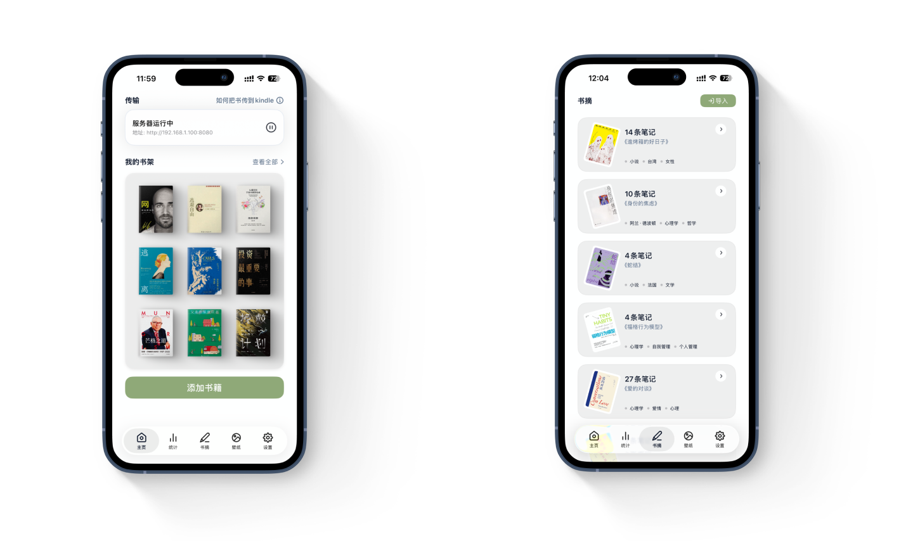
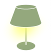

A paid Kindle companion that grew from a personal frustration into a profitable product. This is the project where I owned everything except the code — spotting the problem, designing the app, running the marketing, and setting the pricing. It's the clearest proof I have that I can take a product all the way to people paying for it.
A two-person project. Design, growth, and pricing by me. Engineering by my collaborator.

Product sense — finding the real problem
Kindle is beloved, but its own ecosystem makes simple things needlessly hard. Getting a book onto the device means a cable or Amazon's clunky email flow. Your highlights — the whole reason many people annotate — are locked in a plain text file buried on the device, painful to get out. I wasn't looking for an app idea. I was just annoyed, repeatedly, by the same thing.
That's usually where the best products come from. I talked to other heavy Kindle readers and found the same friction everywhere — especially around exporting notes. The opportunity wasn't "build a better Kindle app." It was: take one specific, real, recurring pain and solve it so cleanly that people will pay to never deal with it again.
Design — restraint as the product
The temptation with a utility is to keep adding features. I went the other way. PagePop's interface steps aside — clean type, soft surfaces, nothing competing for attention. The less you notice the interface, the more it feels like the app simply works.
The one place I let it become emotional is the bookshelf. It shows your real covers, slightly tilted, sorted into unread / reading / finished. It turns a file manager into something closer to a self-portrait — the books you own, laid out like a shelf you'd actually want to look at. That small shift is what makes a utility feel personal.
Growth — every user came from content
We never bought ads or tried other channels, which means the growth story is unusually clean: essentially every user came from content I made. I built a dedicated account producing two kinds of posts — practical how-to guides for getting the most out of Kindle, and softer "Kindle lifestyle" writing that reached readers who didn't know a tool like this existed. I extended the same to short-form video.
Beyond my own content, I partnered with creators to try the product and post about it, and built a referral loop into the app itself: if a user enjoyed PagePop and shared a post that got some traction, we'd gift them membership. The people who loved the product became the channel — at no cost to us.
Pricing — reading the market's psychology
This is the part I'm most proud of, because it's pure product judgment, not aesthetics. I set the pricing — and the key insight was that payment psychology isn't universal.
Chinese users tend to prefer one-time ownership over recurring fees, so for that market a lifetime tier pulls far harder on the paywall than an annual subscription would — even when the annual option is technically cheaper up front. Overseas users are the opposite: comfortable with monthly subscriptions, so there the monthly plan leads, priced up to the edge of what feels fair. Same product, two different paywalls, each shaped to how that market actually likes to pay.
A price isn't a number. It's a read on how someone decides to say yes.
The paywall is usually where apps turn cold — a modal, a price, a feature list. PagePop has a hand-drawn bedside lamp instead. Before you subscribe, it's just an outline. Subscribe, and the lamp turns on: warm, lit, glowing. It's not a metaphor explained — it's a metaphor felt. Even in the most practical tool I've made, I wanted one moment that was purely about how it feels.
Free
Light's off
The lamp waits, drawn but unlit.

Member
The lamp is on
Hand-drawn. One small illustration doing what a feature list never could.
Profitable
Sustained paid revenue
4.8★
App Store rating
Organic
Growth entirely from content & referral